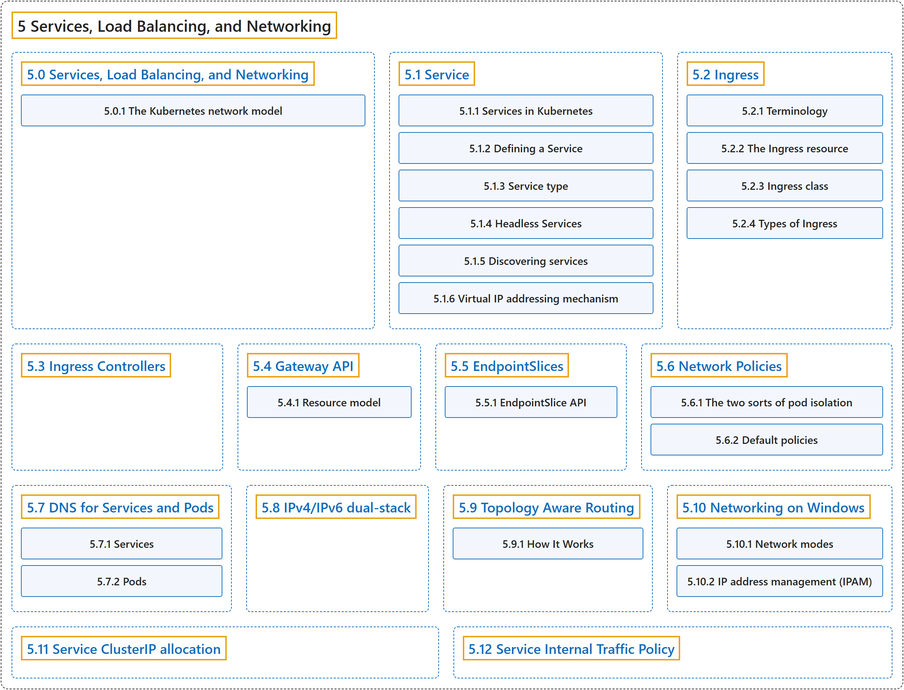

5 Services, Load Balancing, and Networking
Classification

Glossary
| Term | Definition | 中文翻译 | Source |
|---|---|---|---|
| 5 Services, Load Balancing, and Networking 服务、负载均衡与网络 |
(context) "Concepts and resources behind networking in Kubernetes." | （语境）概念和资源，关于 Kubernetes 中的网络。 | The Kubernetes Authors, n.d.-l, "Services, Load Balancing, and Networking", para. 1 |
| 5.0 Services, Load Balancing, and Networking 服务、负载均衡与网络 |
(context) "Concepts and resources behind networking in Kubernetes." | （语境）概念和资源，关于 Kubernetes 中的网络。 | The Kubernetes Authors, n.d.-l, "Services, Load Balancing, and Networking", para. 1 |
| 5.1 Service Service |
"In Kubernetes, a Service is a method for exposing a network application that is running as one or more Pods in your cluster." | 在 Kubernetes 中，Service 是一种暴露网络应用的方法，该应用运行为集群中的一个或多个 Pod。 | The Kubernetes Authors, n.d.-i, "Service", para. 2 |
| 5.2 Ingress Ingress |
"An API object that manages external access to the services in a cluster, typically HTTP." | 一个 API 对象，管理从外部访问集群中服务的行为，通常是 HTTP。 | The Kubernetes Authors, n.d.-d, "Ingress", para. 2 |
| 5.3 Ingress Controllers Ingress 控制器 |
(context) "In order for an Ingress to work in your cluster, there must be an ingress controller running." | （语境）要让 Ingress 在集群中工作，必须有一个 Ingress 控制器在运行。 | The Kubernetes Authors, n.d.-e, "Ingress Controllers", para. 1 |
| 5.4 Gateway API Gateway API |
"Gateway API is a family of API kinds that provide dynamic infrastructure provisioning and advanced traffic routing." | Gateway API 是一组 API 类型，提供动态基础设施供应和高级流量路由。 | The Kubernetes Authors, n.d.-c, "Gateway API", para. 1 |
| 5.5 EndpointSlices EndpointSlice |
"In Kubernetes, an EndpointSlice contains references to a set of network endpoints." | 在 Kubernetes 中，EndpointSlice 包含对一组网络端点的引用。 | The Kubernetes Authors, n.d.-b, "EndpointSlice API", para. 1 |
| 5.6 Network Policies 网络策略 |
"If you want to control traffic flow at the IP address or port level (OSI layer 3 or 4), NetworkPolicies allow you to specify rules for traffic flow within your cluster, and also between Pods and the outside world." | 如果你想在 IP 地址或端口层面控制流量（OSI 第 3 或第 4 层），NetworkPolicy 让你指定集群内部流量的规则，以及 Pod 与外部世界之间的规则。 | The Kubernetes Authors, n.d.-g, "Network Policies", para. 1 |
| 5.7 DNS for Services and Pods Service 与 Pod 的 DNS |
(context) "Kubernetes creates DNS records for Services and Pods." | （语境）Kubernetes 会创建 DNS 记录，对象是 Service 和 Pod。 | The Kubernetes Authors, n.d.-a, "DNS for Services and Pods", para. 2 |
| 5.8 IPv4/IPv6 dual-stack IPv4/IPv6 双栈 |
"IPv4/IPv6 dual-stack networking enables the allocation of both IPv4 and IPv6 addresses to Pods and Services." | IPv4/IPv6 双栈网络能够把 IPv4 和 IPv6 两种地址同时分配给 Pod 和 Service。 | The Kubernetes Authors, n.d.-f, "IPv4/IPv6 dual-stack", para. 2 |
| 5.9 Topology Aware Routing 拓扑感知路由 |
"Topology Aware Routing provides a mechanism to help keep network traffic within the zone where it originated." | 拓扑感知路由 提供一种机制，帮助把网络流量保持在其发出的可用区内。 | The Kubernetes Authors, n.d.-m, "Topology Aware Routing", para. 1 |
| 5.10 Networking on Windows Windows 上的网络 |
(context) "Networking for Windows containers is exposed through CNI plugins." | （语境）Windows 容器的网络是通过 CNI 插件提供的。 | The Kubernetes Authors, n.d.-h, "Container networking on Windows", para. 1 |
| 5.11 Service ClusterIP allocation Service ClusterIP 分配 |
(context) "In Kubernetes, Services are an abstract way to expose an application running on a set of Pods." | （语境）在 Kubernetes 中，Service 是一种抽象方式，用来暴露运行在一组 Pod 上的应用。 | The Kubernetes Authors, n.d.-j, "Service ClusterIP allocation", para. 1 |
| 5.12 Service Internal Traffic Policy Service 内部流量策略 |
"Service Internal Traffic Policy enables internal traffic restrictions to only route internal traffic to endpoints within the node the traffic originated from." | Service 内部流量策略 启用内部流量限制，只把内部流量路由到流量发出节点内的端点。 | The Kubernetes Authors, n.d.-k, "Service Internal Traffic Policy", para. 2 |
References
The Kubernetes Authors. (n.d.-a). DNS for Services and Pods. Kubernetes Documentation. Retrieved October 31, 2026, from https://kubernetes.io/docs/concepts/services-networking/dns-pod-service/
The Kubernetes Authors. (n.d.-b). EndpointSlices. Kubernetes Documentation. Retrieved October 31, 2026, from https://kubernetes.io/docs/concepts/services-networking/endpoint-slices/
The Kubernetes Authors. (n.d.-c). Gateway API. Kubernetes Documentation. Retrieved October 31, 2026, from https://kubernetes.io/docs/concepts/services-networking/gateway/
The Kubernetes Authors. (n.d.-d). Ingress. Kubernetes Documentation. Retrieved October 31, 2026, from https://kubernetes.io/docs/concepts/services-networking/ingress/
The Kubernetes Authors. (n.d.-e). Ingress Controllers. Kubernetes Documentation. Retrieved October 31, 2026, from https://kubernetes.io/docs/concepts/services-networking/ingress-controllers/
The Kubernetes Authors. (n.d.-f). IPv4/IPv6 dual-stack. Kubernetes Documentation. Retrieved October 31, 2026, from https://kubernetes.io/docs/concepts/services-networking/dual-stack/
The Kubernetes Authors. (n.d.-g). Network Policies. Kubernetes Documentation. Retrieved October 31, 2026, from https://kubernetes.io/docs/concepts/services-networking/network-policies/
The Kubernetes Authors. (n.d.-h). Networking on Windows. Kubernetes Documentation. Retrieved October 31, 2026, from https://kubernetes.io/docs/concepts/services-networking/windows-networking/
The Kubernetes Authors. (n.d.-i). Service. Kubernetes Documentation. Retrieved October 31, 2026, from https://kubernetes.io/docs/concepts/services-networking/service/
The Kubernetes Authors. (n.d.-j). Service ClusterIP allocation. Kubernetes Documentation. Retrieved October 31, 2026, from https://kubernetes.io/docs/concepts/services-networking/cluster-ip-allocation/
The Kubernetes Authors. (n.d.-k). Service Internal Traffic Policy. Kubernetes Documentation. Retrieved October 31, 2026, from https://kubernetes.io/docs/concepts/services-networking/service-traffic-policy/
The Kubernetes Authors. (n.d.-l). Services, Load Balancing, and Networking. Kubernetes Documentation. Retrieved October 31, 2026, from https://kubernetes.io/docs/concepts/services-networking/
The Kubernetes Authors. (n.d.-m). Topology Aware Routing. Kubernetes Documentation. Retrieved October 31, 2026, from https://kubernetes.io/docs/concepts/services-networking/topology-aware-routing/